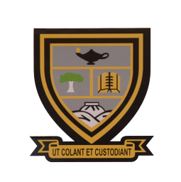

Our Farm
Our working farm includes greenhouses, tractor sheds and open fields where students gain real, hands-on agricultural experience alongside their academic studies.

WINTERBERG AGRICULTURAL HIGH SCHOOLWinterberg Agricultural High School started in 1972 as an all-boys school in the Kat River Valley near Fort Beaufort, South Africa. The school merges formal academic education with practical, commercial farming experience.
Our working farm includes greenhouses, tractor sheds and open fields where students gain real, hands-on agricultural experience alongside their academic studies.
We are committed to eco-friendly farming practices, teaching students to care for the land while producing food and resources responsibly.
Since 1972, Winterberg has grown from an all-boys agricultural school into a respected institution that trains the next generation of farmers and agricultural professionals.
Timeline
Select a milestone to read more.
Winterberg opens near Fort Beaufort as an all-boys agricultural school, putting farming practice at the centre of the timetable.
Dairy, piggery, poultry, citrus and lucerne units give every grade a rotating practical day, from Grade 8 to Grade 12.
Welding, metalwork, meat processing, mohair classing and sheep shearing prepare students for skilled trades as well as farming careers.
A respected institution that trains the next generation of farmers and agricultural professionals, and supplies the surrounding community with fresh produce.
To cultivate and care for.